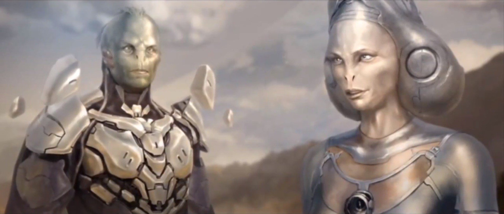
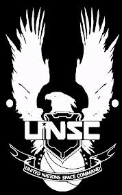
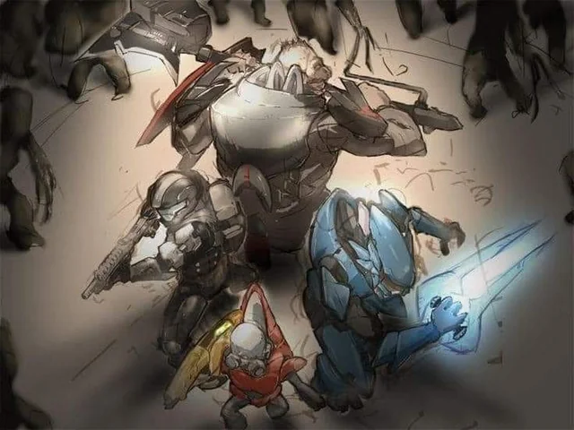
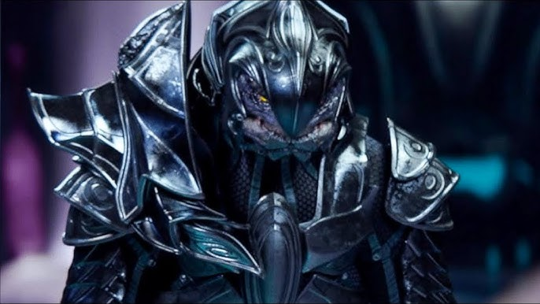
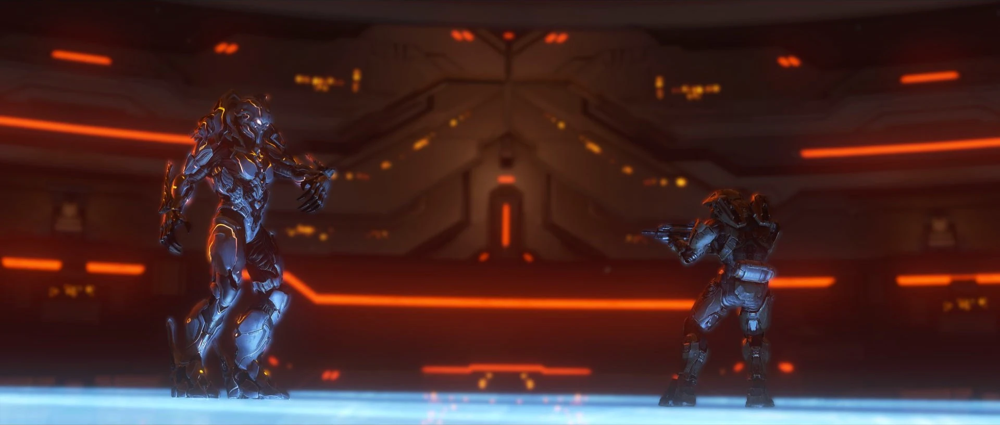
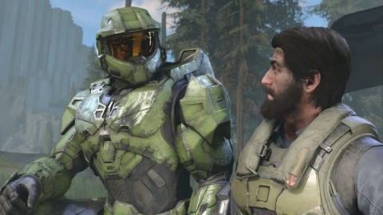
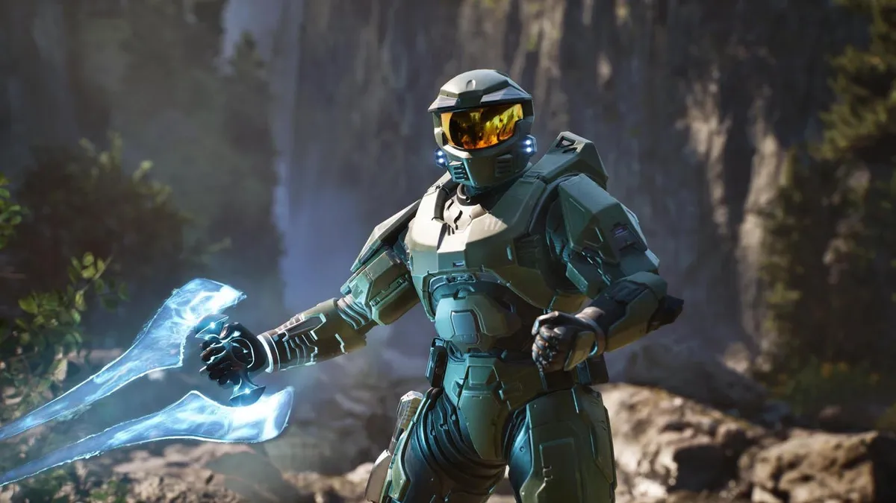

Explora la cronología del universo Halo, desde sus orígenes hasta Halo Infinite
Hace millones de años, los Precursors eran una antigua civilización casi divina que creó muchas formas de vida en la galaxia, incluidos los Forerunners y los humanos. Tras rebelarse contra sus creadores, los Forerunners aniquilaron a los Precursors, lo que desencadenó una maldición: la creación del Flood, una plaga parasitaria destinada a destruir a los Forerunners. Para combatir al Flood, los Forerunners crearon los anillos Halo, superarmas que exterminarían toda la vida inteligente en la galaxia para privar al Flood de hospederos. Finalmente, activaron los anillos y se extinguieron junto con la mayoría de las especies.
Para combatirlo, construyeron los anillos Halo: superarmas diseñadas para erradicar toda vida inteligente y así privar al Flood de huéspedes.
En el siglo XXVI, la humanidad, liderada por la UNSC (Comando Espacial de las Naciones Unidas), ha colonizado cientos de planetas. Sin embargo, enfrenta una guerra civil contra los insurrectos, lo que lleva al desarrollo del programa SPARTAN-II, diseñado para crear supersoldados.
En 2525, la humanidad entra en contacto con una alianza teocrática alienígena llamada el Covenant, quienes consideran a los humanos como herejes. El Covenant comienza una campaña genocida contra la humanidad.
Los SPARTAN-II, liderados por John-117 (el Jefe Maestro), se convierten en la principal defensa de la humanidad. Acompañado por la inteligencia artificial Cortana, John-117 descubre el primer anillo Halo en 2552: Instalación 04.
En el primer juego, Halo: Combat Evolved, la humanidad descubre el Flood y el propósito de los anillos Halo. En lugar de activarlos, el Jefe Maestro los destruye para evitar una catástrofe.
El Covenant se divide cuando el Inquisidor, un excomandante élite, descubre la verdad sobre los Halos. Humanos y élites unen fuerzas para detener la activación de los anillos. En Halo 3, la alianza destruye el Arca, una estructura que controla todos los Halos, y frena el intento final del Covenant de activar las armas. Cortana queda atrapada, y el Jefe Maestro es dado por muerto. 
En Halo 4, el Jefe Maestro despierta años después y se enfrenta a un nuevo enemigo: los Prometeos, antiguos soldados Forerunner liderados por el Didacta. Cortana empieza a deteriorarse debido a la "rampancia", un fallo de las IA. Cortana muere al final del juego, sacrificándose para salvar a la humanidad.
En Halo 5, Cortana regresa, pero ahora lidera una rebelión de IA llamadas los Guardianes, con el objetivo de imponer la paz galáctica por la fuerza. El Jefe Maestro desobedece órdenes para encontrarla, mientras el escuadrón Osiris intenta detenerlo. El juego termina con Cortana tomando control de muchas civilizaciones, iniciando una nueva era de conflicto.
En Halo Infinite, el Jefe Maestro es rescatado por un piloto y llevado al anillo Zeta Halo, donde debe enfrentarse a una nueva facción llamada Los Desterrados, liderados por Atriox. Con la ayuda de una nueva IA llamada El Arma, que replica a Cortana, el Jefe intenta detener la activación de Zeta Halo y comprender qué pasó con Cortana, quien fue finalmente destruida antes de los eventos del juego.
La saga Halo continúa expandiéndose, con nuevos contenidos planeados y un enfoque renovado en narrativa y exploración. Zeta Halo guarda secretos antiguos, y aún queda por resolver el conflicto con los Desterrados, las IA rebeldes y las consecuencias del legado Forerunner.
